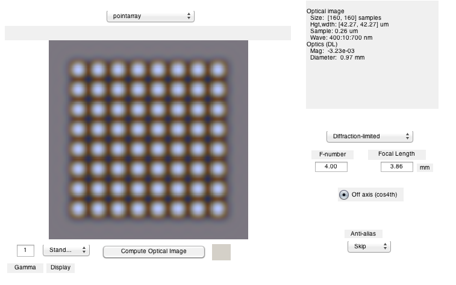
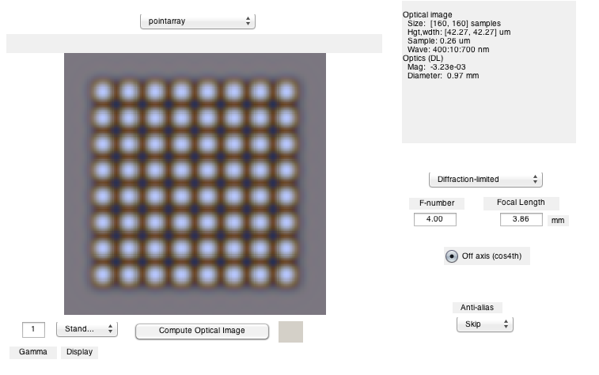
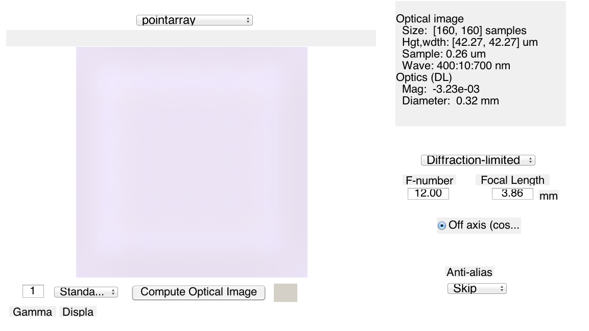
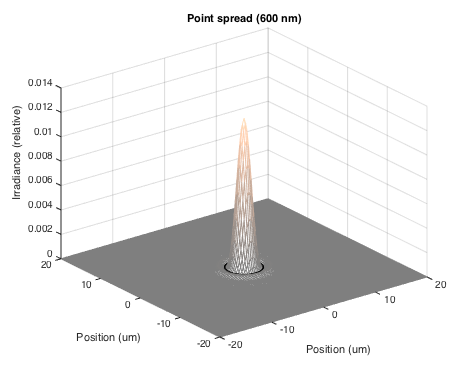
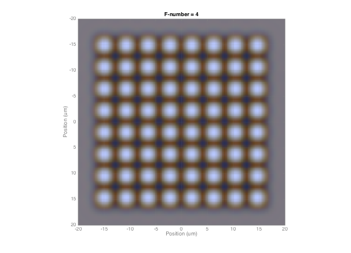
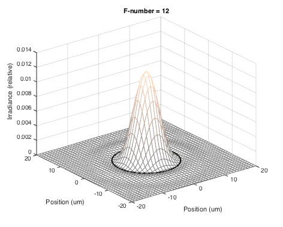
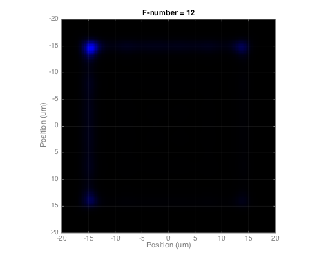
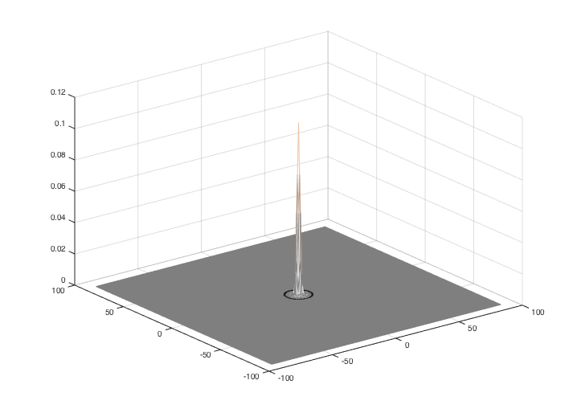

Contents
% t_oiCompute % % Walk through the calculations in oiCompute. % % Illustrates how scene radiance is converted through a lens to an optical image (irradiance) % % Copyright ImagEval Consultants, LLC, 2010.
This is the basic radiance to irradiance code
Creates an array of points
scene = sceneCreate('point array'); scene = sceneSet(scene,'hfov',0.5); vcAddAndSelectObject(scene); sceneWindow; % Diffraction limited optics oi = oiCreate; % Compute optical image and show it oi = oiCompute(scene,oi); vcAddAndSelectObject(oi); oiWindow;
 
 Make a bigger f-number, compute and show
optics = oiGet(oi,'optics'); fnSmall = opticsGet(optics,'f number'); fnBig = 3* fnSmall; optics = oiGet(oi,'optics'); optics = opticsSet(optics,'fNumber',fnBig); oi2 = oiSet(oi,'optics',optics); oi2 = oiCompute(scene,oi2); vcAddAndSelectObject(oi2); oiWindow;
Plot the psf of the optics
vcNewGraphWin; thisWave = 600; oiPlot(oi,'psf',[],thisWave); set(gca,'xlim',[-20 20],'ylim',[-20 20]); colormap(0.5*copper + 0.5*ones(size(copper)));
Plot irradiance image
vcNewGraphWin; gridSpacing = 5; % um oiPlot(oi,'irradiance image with grid',[],gridSpacing); set(gca,'xlim',[-20 20],'ylim',[-20 20]) title(sprintf('F-number = %d',fnSmall))
What happens if we change the f/# of the optics and replot?
vcNewGraphWin; oiPlot(oi2,'psf',[],thisWave); set(gca,'xlim',[-20 20],'ylim',[-20 20]) colormap(0.5*copper + 0.5*ones(size(copper))) title(sprintf('F-number = %d',fnBig))
Plot new irradiance image
vcNewGraphWin; gridSpacing = 5; oiPlot(oi2,'irradiance image with grid',[],gridSpacing); set(gca,'xlim',[-20 20],'ylim',[-20 20]) title(sprintf('F-number = %d',fnBig))
Here is the psf plot method, including the OTF and PSF
This is just copied from the oiPlot code, really.
% Specify units units = 'um'; % Calling conventions should be specified here. % The opticsGet() for diffraction limited should be % adjusted so that this code becomes shorter. % idx = ieFindWaveIndex(wavelength,thisWave); nSamp = 100; % Number of frequency steps from 0 to incoherent cutoff val = opticsGet(optics,'dlFSupport',thisWave,units,nSamp); [fSupport(:,:,1),fSupport(:,:,2)] = meshgrid(val{1},val{2}); % We over sample the frequency to get a smoother PSF image. % You can specify the factor for oversampling if you like % in the calling arguments. s = 4; fSupport = fSupport*s; % Frequency units are cycles/micron The spatial frequency % support runs from -Nyquist:Nyquist. With this coding, the % Nyquist frequency is actually the peak frequency value. % There are two samples per Nyquist, so the sample spacing % is 1/(2*peakF) % deltaSpace = 1/(2*max(fSupport(:))); % Diffraction limited MTF otf = dlMTF(oi,fSupport,thisWave,units); psf = fftshift(ifft2(otf)); samp = (-nSamp:(nSamp-1)); [X,Y] = meshgrid(samp,samp); sSupport(:,:,1) = X*deltaSpace; sSupport(:,:,2) = Y*deltaSpace; fNumber = opticsGet(optics,'fNumber'); % First zero crossing radius = (2.44*fNumber*thisWave*10^-9)/2 * ieUnitScaleFactor(units); [adX,adY,adZ] = ieShape('circle',200,radius); x = sSupport(:,:,1); y = sSupport(:,:,2); % We used to choose a size to show that illustrates the PS down to % one percent. Now we just show the whole thing. % sz = selectPlotSupport(psf,0.001); % x = getMiddleMatrix(x,sz); % y = getMiddleMatrix(y,sz); % psf = getMiddleMatrix(psf,sz); clf mesh(x,y,psf); % For the diffraction limited case, we draw the Airy disk hold on; plot3(adX,adY,adZ,'k.'); hold off; colormap(0.5*copper + 0.5*ones(size(copper)))